Create the testing database in MySQL Workbench
This picture tutorial follows step 5 in README.md of the Farmer Based Advisory System. You install MySQL, connect in MySQL Workbench, and run the SQL that creates the testing database.
Part 1. Download the programs
1Download MySQL Community Server
- Open https://dev.mysql.com/downloads/mysql/.
- In Select Operating System, choose your system (for example, macOS or Microsoft Windows).
- Click Download next to the installer for your system.
- Open the installer file and follow the steps on the screen. Remember the password that you set for the
rootuser.
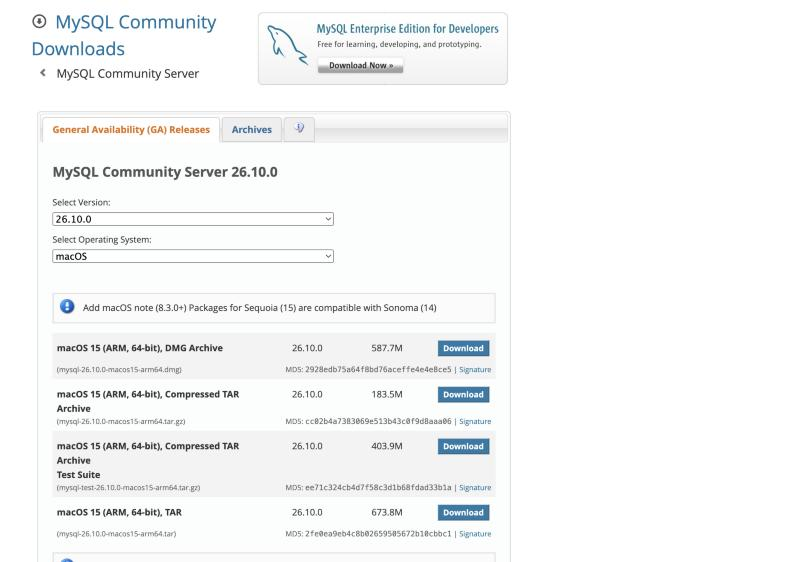
The README needs MySQL Server 8 or a compatible server. To get an older version, use the Select Version list on the page.
2Download MySQL Workbench
- Open https://dev.mysql.com/downloads/workbench/.
- In Select Operating System, choose your system.
- Click Download next to the installer for your system.
- Install the program. On a Mac, drag MySQL Workbench into the Applications folder.
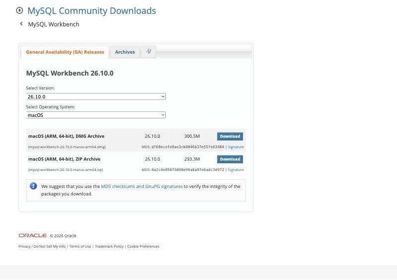
The next page can ask you to log in or sign up with Oracle. If you see a link with the text No thanks, just start my download, click it.
Part 2. Connect to the server
3Open MySQL Workbench
Start the program. The Home page shows the list Database Connections. If the list is empty, you must add a connection.
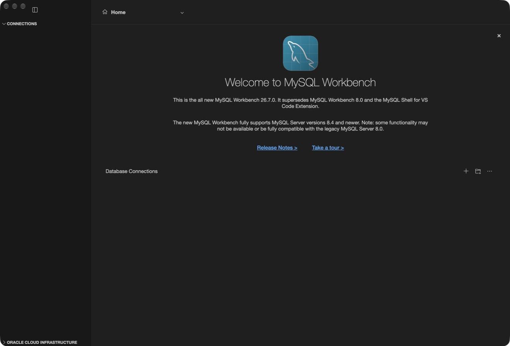
4Add a connection to your local server
- In Caption, write a name, for example
Local MySQL. - In Host Name or IP Address, keep
localhost. - In Port, keep
3306. - In User Name, write
root. - Click OK.
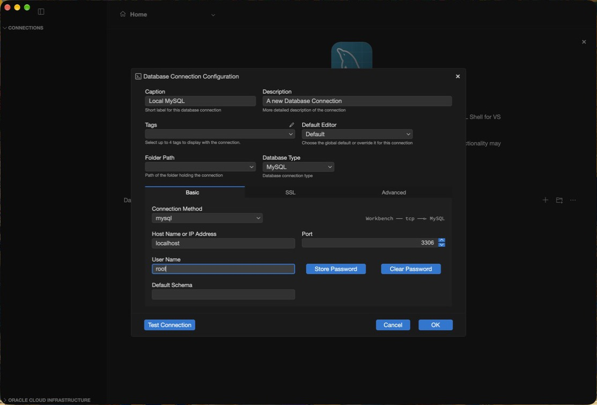
5Click the connection
The new connection shows on the home page. Double-click it.
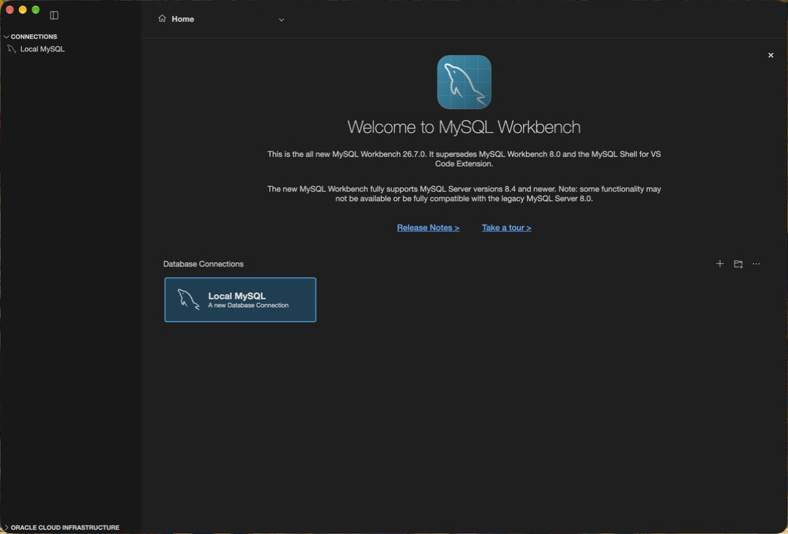
6Enter the password for root
Type the password that you set when you installed MySQL Server. Click OK.
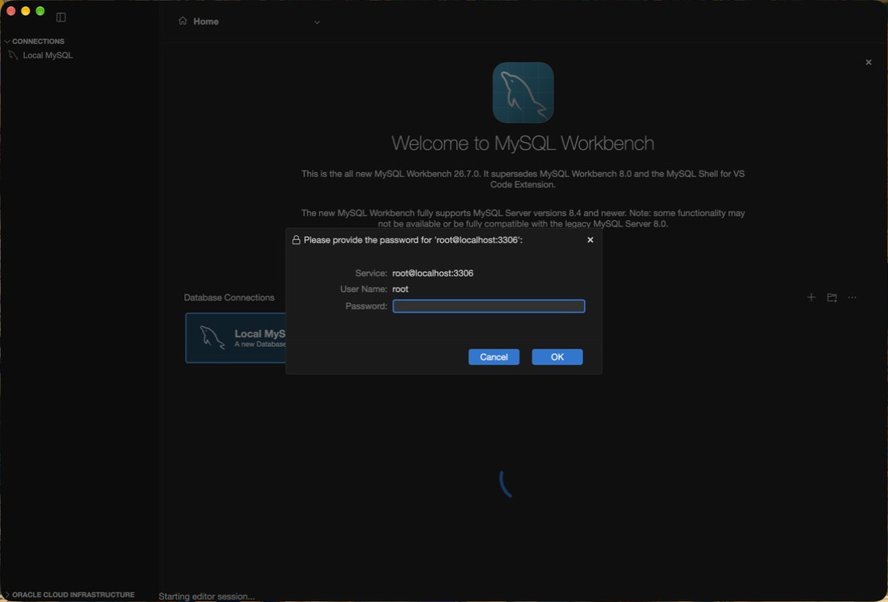
7Check the connection
The top bar shows Connected. The Schemas list at the left shows the databases on the server. A new server shows information_schema, performance_schema, and sys.
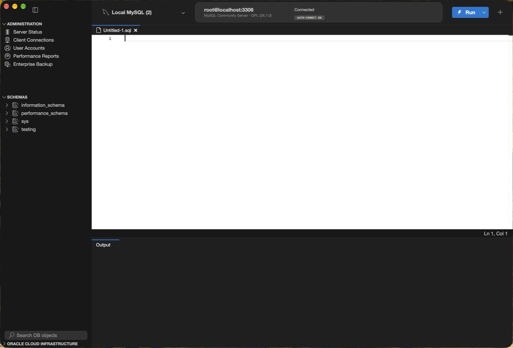
Part 3. Create the testing database
8Open a new SQL tab
Click File > New SQL Script (shortcut: ⌘N on a Mac).
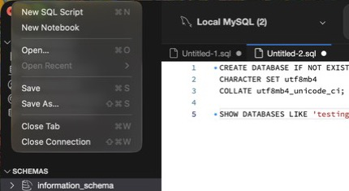
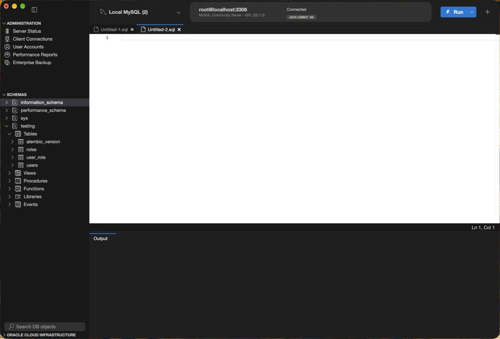
9Paste the SQL from the README
Click in the editor. Paste this SQL.
CREATE DATABASE IF NOT EXISTS testing
CHARACTER SET utf8mb4
COLLATE utf8mb4_unicode_ci;
SHOW DATABASES LIKE 'testing';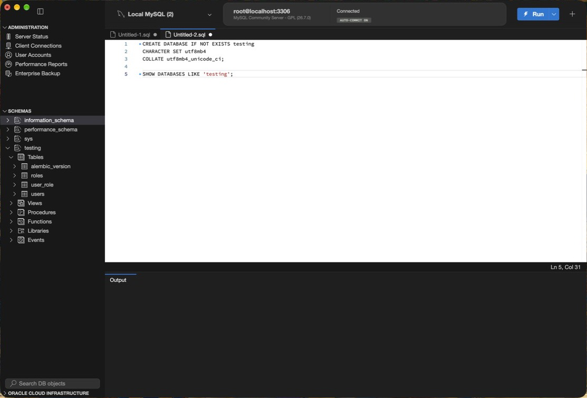
The first statement creates the database. The words IF NOT EXISTS make it safe to run two times. The second statement shows the database, so you can check it.
10Run the SQL
Click the lightning bolt icon (Run) at the top right. Workbench runs all statements in the tab.
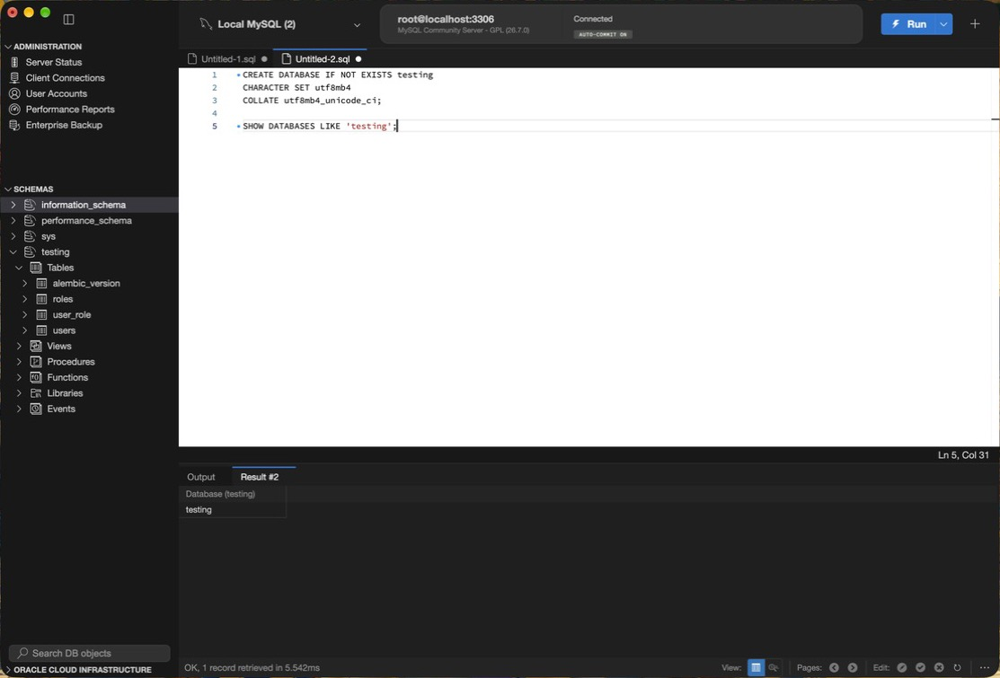
testing. The message at the bottom says OK, 1 record retrieved.If the grid shows one row with the name testing, the database exists. You can now do step 6 of the README: create the .env file with DATABASE_URL.
testing, click the refresh icon above the list.